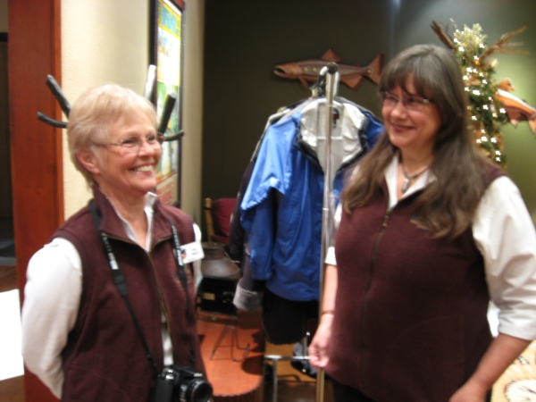
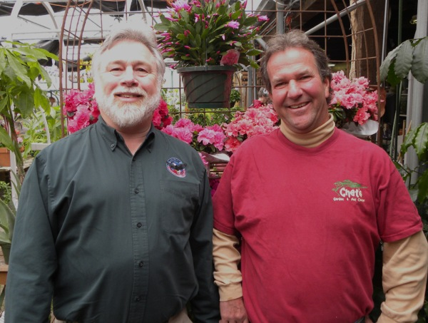
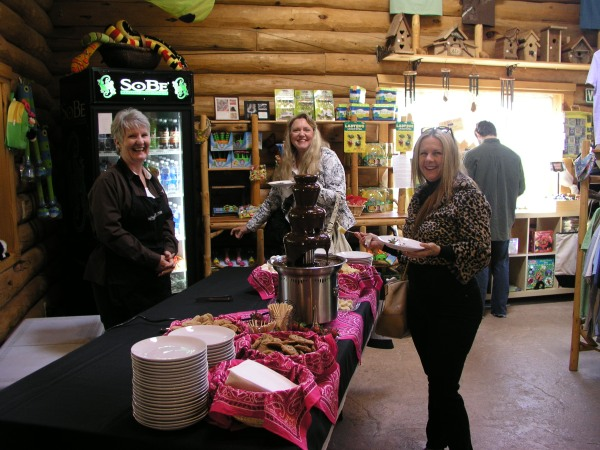
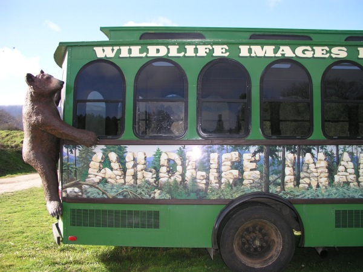
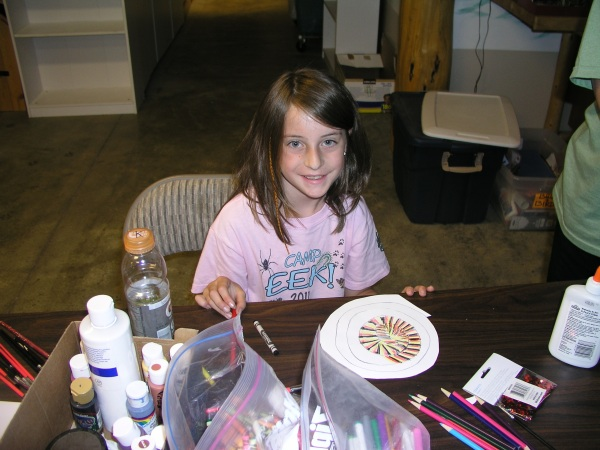
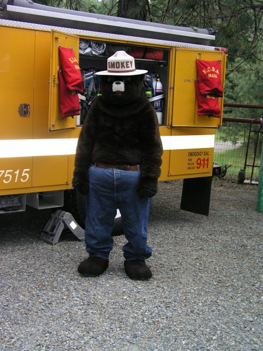

Wildlife Images Rehabilitation & Education Center Special Events 2012
We plan on adding many more fun “members only” events too!

March 6th 6:00pm – 7:30pm “Estate Planning 101” Estate Planning Workshops A FREE workshop on basic estate planning principles (to include charitable giving) and how to have an estate plan that works. Workshop will be held in the Evergreen Room at Taprock NW Bar and Grill in Grants Pass. Participants will receive a free tour ticket of Wildlife Images. Light appetizer and refreshments provided.
March 31st 2:00pm – “Color Eggs for the Critters” an Eggs-Travaganza! Children from 2 to 15 can come and help our animal care staff color eggs for the critters. Animal Keepers will place the colored eggs throughout the habitats during the following Easter weekend so that the animals have to forage for their food, and of course crack open the colorful shells. The animals love it! Free Event!
April 10th thru 16th – Volunteer Appreciation Days Help us thank our valuable volunteers. Bring a token of your appreciation, such as a poem, card, flower, chocolate etc… and receive free admission to Wildlife Images. Reservations are required.
April 14th – Pear Blossom Parade Medford Oregon ~ Come see us in the parade!
April 22nd – “Earth Day” Go Green Day Wear Green and Admission is half price. Children can enter the color completion to win a free pass on the Expedition Transport for the rest of 2012! Reservations are required.
May 5th – Magical Merlin Parade Merlin Oregon ~ Come see us in the parade!
May 5th and 6th – Spring into Wildlife a Fundraiser at Chet’s Garden Center and Nursery – 25% of all proceeds go directly to Wildlife Images Rehabilitation & Education Center. Wildlife is blooming this time of year at Chet’s Nursery. Spring is upon us. It’s time to get planting! Come in for in store specials including 10% off of everything in stock. Choose from a huge selection of plants, fertilizer, gardening supplies, tools and garden art.
May 19th 8:00am to 9:00am – Early Bird Gets the Worm! We will be opening the gates early at 8am and from 8am to 9am kids receive FREE entry! Bring your camera for photo with an animal ambassador. Reservations are required.
May 13th – Wildlife Images 31st Birthday
May 13th 10:00am to 2:00pm – Mother’s Day Brunch A unique Mother’s Day Brunch at Wildlife Images with a touch of chocolate. Enjoy a catered brunch by Silver Ridge Outfitters while in the company of some amazing critters. As our guest you will have full access to our facility with many photo opportunities. And the ladies will receive special gifts of chocolate and a flower. $35.00 for the general public and $25.00 for Wildlife Images members.
May 26th – Boatnik Parade, Grants Pass Oregon ~ Come see us in the parade!
June 1st thru September 9th – Wildlife Images Expedition Transport “Your ride to the Wildside” This is a three hour guided excursion that provides a ride out to Wildlife Images Rehabilitation & Education Center on the Expedition Transport and an exciting and educational tour of our facility. The Transport departs from several locations in downtown Grants Pass.
June 18th thru 22nd – Camp EEK! In 2011, Wildlife Images will be hosting its 7th annual summer camp- Camp EEK! Designed for children between the ages of 7 and 11, this year’s curriculum will focus on nocturnal animals, marine life, ecosystems, and interdependence. Participants will not only enjoy a variety of engaging lessons, creative crafts, and exciting games, but they will also have the opportunity to get up-close and personal with a number of our wild animal residents- including several new furry additions! Join us this summer for a memorable and educational wildlife adventure!
June 23rd and 24th – Southern Oregon Experience~2 Day Fundraising Event ~ Not Confirmed
June 25th thru June 29th – Camp EEK! In 2011, Wildlife Images will be hosting its 7th annual summer camp- Camp EEK! Designed for children between the ages of 7 and 11, this year’s curriculum will focus on nocturnal animals, marine life, ecosystems, and interdependence. Participants will not only enjoy a variety of engaging lessons, creative crafts, and exciting games, but they will also have the opportunity to get up-close and personal with a number of our wild animal residents- including several new furry additions! Join us this summer for a memorable and educational wildlife adventure!
June 29th and 30th 8:00am to 2:00pm – The Great Garage Sale at Wildlife Images. Find that unique treasure at The Great Garage Sale. All income goes to Wildlife Images
June 29th and 30th 10:00am to 2:00pm – Fire Awareness Days at Wildlife Images Presentations given by local Rural/Metro Fire Department. Meet your local heroes, listen to presentations and learn how to be fire safe. Free Event!
July 2nd thru July 6th – Camp EEK! In 2011, Wildlife Images will be hosting its 8th annual summer camp- Camp EEK! Designed for children between the ages of 7 and 11, this year’s curriculum will focus on nocturnal animals, marine life, ecosystems, and interdependence. Participants will not only enjoy a variety of engaging lessons, creative crafts, and exciting games, but they will also have the opportunity to get up-close and personal with a number of our wild animal residents- including several new furry additions! Join us this summer for a memorable and educational wildlife adventure!
July 4th – Fourth of July Parade, Ashland Oregon ~ Come see us in the parade!
July 9th thru July 13th – Camp EEK! In 2011, Wildlife Images will be hosting its 8th annual summer camp- Camp EEK! Designed for children between the ages of 7 and 11, this year’s curriculum will focus on nocturnal animals, marine life, ecosystems, and interdependence. Participants will not only enjoy a variety of engaging lessons, creative crafts, and exciting games, but they will also have the opportunity to get up-close and personal with a number of our wild animal residents- including several new furry additions! Join us this summer for a memorable and educational wildlife adventure!
July 16th thru July 20th – Camp EEK! In 2011, Wildlife Images will be hosting its 8th annual summer camp- Camp EEK! Designed for children between the ages of 7 and 11, this year’s curriculum will focus on nocturnal animals, marine life, ecosystems, and interdependence. Participants will not only enjoy a variety of engaging lessons, creative crafts, and exciting games, but they will also have the opportunity to get up-close and personal with a number of our wild animal residents- including several new furry additions! Join us this summer for a memorable and educational wildlife adventure!
July 28th – Back to the Fifties, Grants Pass Oregon This is the 22nd Anniversary for one of the biggest community events for Grants Pass and Southern Oregon and Wildlife Images Rehabilitation & Education Center will be there. Come visit us!
July 30th thru August 3th – Junior Volunteer Program (JVP) The Wildlife Images Rehabilitation & Education Center JVP is an opportunity for young teenagers interested in working with wildlife. Find out what it means to actually care for these animals every day, and learn what it feels like to help critters in need. Along the way, you’ll gain new knowledge and skills, and create experiences you’ll remember for the rest of your life. The Junior Volunteer Program is designed for 13-15 year old young adults. It’s a week-long program, Monday through Friday, from 8:00 am – 12:00 pm each day. The fee is $115.00 per participant for the entire week. For more information, please call Cyndee Maunu at (541) 476-0222
August 6th thru August 10th – Junior Volunteer Program (JVP) The Wildlife Images Rehabilitation & Education Center JVP is an opportunity for young teenagers interested in working with wildlife. Find out what it means to actually care for these animals every day, and learn what it feels like to help critters in need. Along the way, you’ll gain new knowledge and skills, and create experiences you’ll remember for the rest of your life. The Junior Volunteer Program is designed for 13-15 year old young adults. It’s a week-long program, Monday through Friday, from 8:00 am – 12:00 pm each day. The fee is $115.00 per participant for the entire week.
August 13th thru August 17th – Junior Volunteer Program (JVP) The Wildlife Images Rehabilitation & Education Center JVP is an opportunity for young teenagers interested in working with wildlife. Find out what it means to actually care for these animals every day, and learn what it feels like to help critters in need. Along the way, you’ll gain new knowledge and skills, and create experiences you’ll remember for the rest of your life. The Junior Volunteer Program is designed for 13-15 year old young adults. It’s a week-long program, Monday through Friday, from 8:00 am – 12:00 pm each day. The fee is $115.00 per participant for the entire week.
August 18th – Family Gone Wild Camp Out! Camp out at Wildlife Images Rehabilitation & Education Center! Get a special visit from some of our Animal Ambassadors. You also get to experience some behind-the-scenes areas and make a enrichment treat for your selected animal. Awaken with the animals enjoy a continental breakfast. A special morning tour wraps up this memorable event. Includes dinner, snacks and campfire with stories. All Ages Welcome! $75.00 per tent more details at www.wildlifeimages.org or give us a call at 541-476-0222
August 20th thru August 24th – Junior Volunteer Program The Wildlife Images Rehabilitation & Education Center JVP is an opportunity for young teenagers interested in working with wildlife. Find out what it means to actually care for these animals every day, and learn what it feels like to help critters in need. Along the way, you’ll gain new knowledge and skills, and create experiences you’ll remember for the rest of your life. The Junior Volunteer Program is designed for 13-15 year old young adults. It’s a week-long program, Monday through Friday, from 8:00 am – 12:00 pm each day. The fee is $115.00 per participant for the entire week.
August 25th Family Gone Wild Camp Out! Camp out on the lawn. Get a special visit from some of our Animal Ambassadors. You also get to experience some behind-the-scenes areas. Make enrichment treat for your selected animal. Includes dinner, snacks and campfire with stories. Awaken with the animals and to a continental breakfast. A special morning tour wraps up this memorable event. All Ages Welcome! Still working out the details so check our website at www.wildlifeimages.org or give us a call for more information 541-476-0222
August 27th thru August 31st Junior Volunteer Program The Wildlife Images Rehabilitation & Education Center JVP is an opportunity for young teenagers interested in working with wildlife. Find out what it means to actually care for these animals every day, and learn what it feels like to help critters in need. Along the way, you’ll gain new knowledge and skills, and create experiences you’ll remember for the rest of your life. The Junior Volunteer Program is designed for 13-15 year old young adults. It’s a week-long program, Monday through Friday, from 8:00 am – 12:00 pm each day. The fee is $115.00 per participant for the entire week.
September 8th Seniors Going Wild! Celebrating Grandparents Day Seniors are invited to explore Wildlife Images with a weekend of free admission. Must be over 65, if you look over 20 you will be carded! Reservations are required.
November 10th Honoring Those who Have Served Our Country Veterans are invited to explore Wildlife Images with a weekend of free admission. Reservations are required.
November 22nd Thanksgiving Day – Closed
November 23rd and 24th Wildlife Images fourth annual Holiday Open House The event will feature ½ price tours of the sanctuary, refreshments, and a unique selection of Holiday gifts for every wildlife lover. You can ‘adopt’ one of our animals and enter the raffle to win a life-sized stuffed toy bear. And the best part, all proceeds go directly towards keeping our resident birds and animals warm, fed, and healthy.
December 14th thru December 24th Members, Family & Friends Days Save 30% on everything in the Wildlife Images Gift Shop and enter to win a $50.00 Wildlife Images Rehabilitation & Education Gift Certificate. And the best part, all proceeds go directly towards keeping our resident birds and animals warm, fed, and healthy.
December 25th Christmas Days – Closed